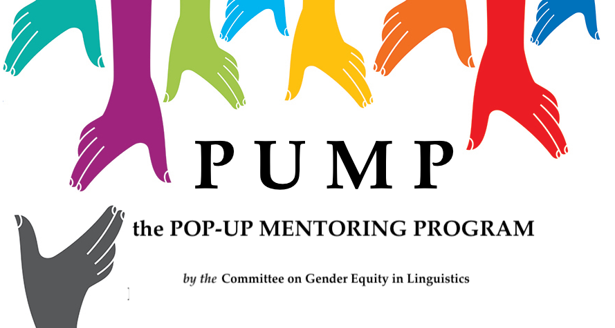

Yale University
marsh auditorium, yale science building
Special Event
marsh auditorium, yale science building
Special Event
Saturday, 13 May
1 pm – 2 pm

SALT 33 is proud to host a Pop-Up Mentoring Program (PUMP) event
If you have signed up as a mentor/mentee, check back here on Friday for information about venue
If you have signed up as a mentor/mentee, check back here on Friday for information about venue
Sponsored by the LSA Committee on Gender Equity, PUMP provides on-site, one-off mentoring meetings at linguistics conferences around the world.
PUMP matches one or more mentees with mentors who can provide quick but personalized career advice to linguists at any stage, in any location, and in any career: anyone can be a mentee or mentor, the more the merrier.
- You can register as a mentee
here, and as a mentor
here.
We almost always have a lot of mentee interest, so especially encourage relatively senior linguists to apply as mentors if they think they can. - The deadline for registering as a mentee or a mentor for this event is May 5, 2023.
- After you register, you will receive an email matching you with your mentor or mentee, with details about how to meet. Please email Jessica Rett (rett@ucla.edu) with any questions about the PUMP event.